Para el desarrollo web con PHP, existen diferentes opciones para comenzar a aprender o desarrollar aplicaciones profesionales con este lenguaje.
Para ello existen varias alternativas llamados AMP (Apache, MySQL/MariaDB, Perl/PHP/Python), se clasifican en LAMPs (para Linux), WAMPs (para Windows), MAMPs (para macOS). Esta es la lista de soluciones para las plataformas mas comunes
| Paquete | Plataforma |
|---|---|
| AMPPS | Windows, macOS, Linux, BSD |
| Bitnami LAMP Stack | Linux |
| Bitnami MAMP Stack | macOS |
| Bitnami WAMP Stack | Windows |
| DAMP | macOS |
| LAMP | Linux |
| MAMP | Windows, macOS |
| XAMPP | Windows, Linux, macOS |
| Wamp.NET | Windows |
| WampServer | Windows |
| Zend Server Community Edition | Windows, macOS, Linux, IBMI |
Existen muchos mas y seguirán surgiendo aun mas. Lo que vamos a realizar en este tutorial es olvidarnos de esa lista y crear nuestro propio ambiente de desarrollo listo para produccion y sin tener que comprometer el sistema operativo base de nuestra computadora.
1.- Descarga e Instalacion de Vagrant y Virtualbox
Comencemos instalando los dos programas requeridos, VirtualBox y Vagrant e instalarlos, no importa el orden. Si ya los tienes instalados, asegurate que se encuentren actualizados en la ultima version.
Una vez instalados, reinicia tu computadora para que reconozca los comandos, todo lo haremos desde linea de comando o consola.
2.- Buscamos la distribución Linux base
Elegimos Linux, precisamente por que estamos preparando todo para producción. Existe un repositorio en el sitio de vagrant donde la comunidad constantemente sube distribuciones linux de todo tipo, es aqui donde buscaremos nuestra configuracion favorita, para este ejemplo vamos a buscar Ubuntu 16 LTS de 64 bits.
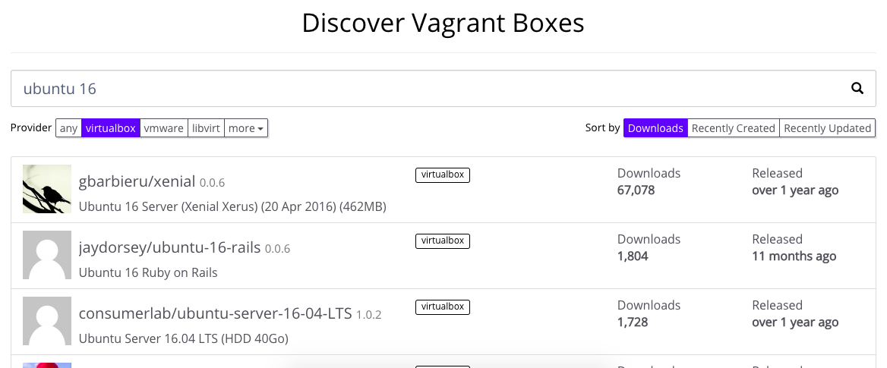
Selecciona como Provider a VirtualBox y busca Ubuntu 16 como se muestra en la imagen, puedes elegir el que gustes, la cantidad de descarga te puede dar una idea de cuales son las mas populares, nosotros elegiremos gbarbieru/xenial, solo copiamos el nombre
3.- Creacion de archivo Vagrantfile y configuracion
Desde nuestra maquina principal, en la consola o ventana MS-DOS nos dirigimos a una carpeta de trabajo y dentro tecleamos
$ vagrant init gbarbieru/xenial
Esta acción nos generará un único archivo llamado Vagrantfile, abre el archivo con tu editor de textos favorito y vamos a modificar un par de lineas, la mayoria se encuentra comentada.
Busca la seccion config.vm.network y config.vm.syncedfolder, quitamos el comentario y en el primer caso, vamos a colocar una direccion IP, esta direccion NO debe de ser igual al de tu red interna, puede ser cualquier otro, si no estas seguro deja la que aparece por defecto, en mi caso voy a dejarla de la siguiente forma
config.vm.network "private_network", ip: "192.168.99.10"
En la seccion de syncedfolder voy a indicarle la carpeta comun que compartirá mi maquina host y la maquina virtual Linux, los archivos que coloque en ésta carpeta se verán en ambos ambientes. Es aqui donde colocamos nuestro condigo fuente de nuestra aplicacion, para poder editarla desde mi equipo principal y ejecutarla desde la maquina virtual Linux, voy a dejarla de la siguiente forma
config.vm.synced_folder "./public_html", "/vagrant_html"
Importante: debes crear la carpeta que vas a compartir entre los dos ambientes antes de levantar la maquina virtual
Desde nuestra maquina principal, voy a crear en esta ubicacion mi carpeta compartida
$ mkdir public_html
4.- Arrancamos nuestra maquina virtual
Ya tenemos listo nuestro archivo de configuracion de Vagrant y nuestra carpeta compartida para Virtualbox, ahora iniciaremos la maquina virtual, seguimos desde linea de comando.
$ vagrant up
Esta operacion iniciará la maquina virtual, por ser la primera vez que utilizamos esta imagen, la va a descargar del repositorio de vagrant, quizá demore un poco, esto dependerá de tu velocidad de internet. Una vez descargada podrás utilizarla con mas configuraciones y el proceso será mas rapido, si decides cambiar de distribucion Linux, igual la descargará solo la primera vez.
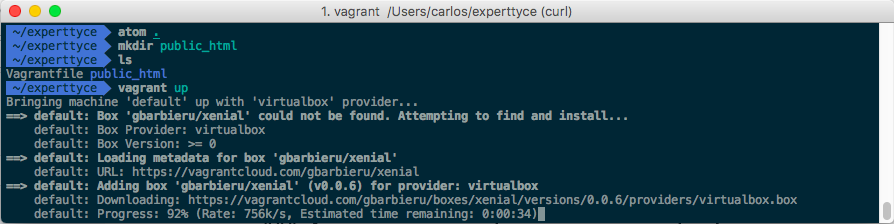
5.- Instalación de EasyEngine y creacion de nuestro primer sitio web
Si todo salió bien, veremos la siguiente imagen
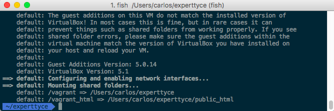
Ahora ya estamos listos para la instalacion del paquete EasyEngine. Esta utileria funciona en distribuciones basadas en Debian, y nos ayudará a crear nuestro sitio web facil y rapido.
Entramos a nuestro ambiente Linux con el comando
$ vagrant ssh
así de sencillo, no necesitamos instalar ninguna otra aplicacion y tampoco necesitamos de configuraciones complejas, solo basta con estar ubicado en la carpeta de trabajo desde la linea de comandos. ¿Como sabemos que estamos en Linux?, cuando veamos el prompt vagrant@vagrant:~$
La primera vez haremos una actualizacion de nuestro Linux. Desde nuestra maquina virtual tecleamos,
$ sudo apt update
$ sudo apt upgrade
Si les sale esta pantalla
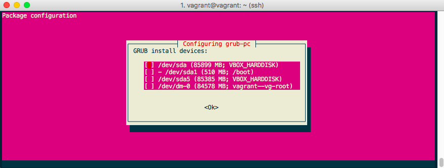
preguntando por la instalacion de GRUB, elijan la primera opcion y opriman la barra espaciadora para marcarla y luego enter.
Es posible que salgan mas confirmaciones, lean de que se trata y si no estan seguros, solo opriman enter.
Ya terminamos de instalar nuestro SO Linux, ahora tecleamos
$ wget -qO ee rt.cx/ee && sudo bash ee
Esta operacion instalará el paquete EasyEngine y solo lo haremos una vez. En alguna parte de la instalación preguntará por tu nombre y correo electronico, proporciona un correo válido, ahi te llegarán los avisos de actualizaciones.
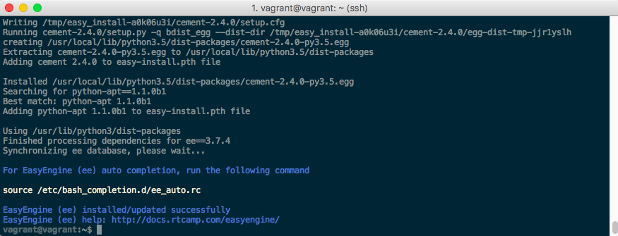
Una vez terminado ahora si vamos a crer nuestro sitio web, con esta utileria podemos crear hasta 14 tipos diferentes de sitios web incluido Wordpress.
Lo que nos ocupa el dia de hoy es nuestro ambiente LEMP y lo creamos
$ sudo ee site create mipagina.com --mysql --php7
Con esta instruccion vamos a crear un sitio web llamado "mipagina.com" con soporte para PHP, base de datos MySQL y servidor Web NGINX.
Despues de esperar a que descargara todo lo necesario, llegamos a esta imagen
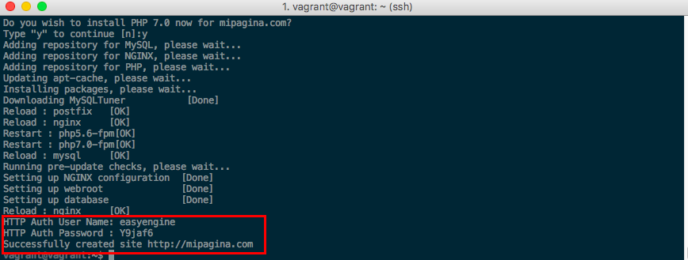
Tomen nota de lo marcado, ese usuario y contraseña lo utilizaremos mas adelante
Ya tenemos creado nuestro sitio web y podemos verlo en la URL http://mipagina.com, pero para que esto sea posible vamos a editar un archivo en nuestra maquina principal, dejamos la virtual por un momento y buscamos en nuestro equipo el archivo host
- Linux o Mac se encuentra en /etc/host
- Windows se encuentra en c:\Windows\System32\drivers\etc\
Desde nuestra maquina principal, editamos el archivo con permisos de administrador y agregamos la siguiente linea
192.168.99.10 mipagina.com
La ip de nuestra maquina virtual, la que se definió al principio del tutorial, y el dominio ficticio de nuestro sitio web, de esta forma la computadora resolverá ese nombre localmente cuando la solicitemos desde un navegador.
Guardamos cambios y hacemos pruebas.
Desde el navegador entramos al direccion http://mipagina.com
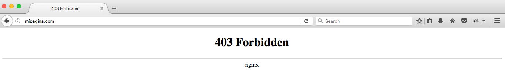
Si ven esta imagen, quiere decir que estamos bien, no te preocupes del mensaje por el momento.
6.- Configuracion del sitio web a la carpeta compartida
En este paso vamos a editar un poco los archivos de configuracion de NGIX, para que apunte a la carpeta de nuestro codigo fuente, por defecto los directorios de sitios web los aloja en /var/www, vamos a modificar esa ruta.
Primero que nada, dentro de mi carpeta compartida public_html.
Desde nuestra maquina principal, voy a crear otra carpeta llamada mipagina_com
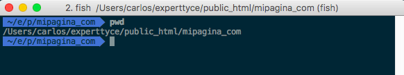
Mi intencion es la de crear varios sitios web y cada una con su propia carpeta dentro de public_html
Desde la maquina virtual tecleamos
$ sudo vim /etc/nginx/sites-enabled/mipagina.com
busquen la seccion root /var/www/mipagina.com/htdocs; y cambienla por root /vagrant_html/mipagina_com; guardamos en vim con :wq, si no estas acostumbrado a usar VIM, puedes usar nano o cualquier otro editor de textos para consolo en Linux.
Comprobamos si no hay errores en el archivo de configuracion y reiniciamos el servicio de NGINX
$ sudo nginx -t
$ sudo systemctl restart nginx
Desde nuestra maquina principal, vamos a nuestra carpeta mipagina_com y dentro vamos a crear un archivo de prueba index.html para comprobar si realmente esta apuntando a nuestra carpeta compartida
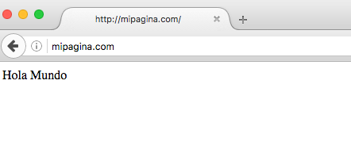,
en mi caso solo puse dentro del archivo index.html Hola Mundo y recargamos la pagina para ver el resultado
7.- Configurando base de datos MySQL
Hasta aqui ya tenemos nuestro sitio web funcionando, puedes colocar en tu carpeta compartida tu codigo fuente y NGINX lo interpretará, cualquier cambio que realices desde tu equipo principal se verá reflejado inmediatamente.
Vamos con la parte de base de datos, al crear el sitio, le indicamos que queriamos una base de datos MySQL, pero ¿donde esta ubicado mi base de datos y como accedo a ella?.
Desde nuestra maquina virtual, nos dirigimos a la carpeta /var/www/mipagina.com
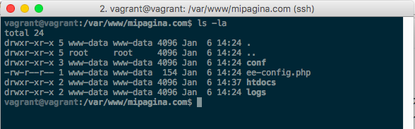
observen el contenido del archivo ee-config.php tecleando
$ cat ee-config.php
y tomen nota del contenido, ahi viene el usuario, base de datos y contraseña que creo para nuestro sitio mipagina.com, con esta informacion podemos conectarnos a la base de datos desde linea de comandos tecleando
$ mysql -u mipagina_com -pZu5QcM7w6WEkO41 mipagina_com
coloquen la informacion de su archivo, puede ser diferente la contraseña.
Pero no queremos usar linea de comando para administrar nuestra base de datos, entonces procederemos a instalar phpmyadmin
$ sudo apt install composer -y
$ sudo ee stack install --phpmyadmin
$ cd /var/www/22222/htdocs/db/pma/
$ composer install --no-dev
Basicamente lo que hicimos fue instalar composer, despues el stack de phpmyadmin y para poder instalar las dependencias nos cambiamos al directorio de instalacion e instalamos el resto con composer
Una vez terminado, vamos a entrar a phpmyadmin a traves del sitio de administracion de EasyEngine, se acuerdan del usuario y contraseña que les pedí que tomaran nota en el paso 5, es ahora cuando lo utilizaremos.
Desde nuestra maquina principal, entramos en cualquier navegador web y vamos a la url https://192.168.99.10:22222/, es un sitio https no certificado, el navegador pedira agregar una excepcion.
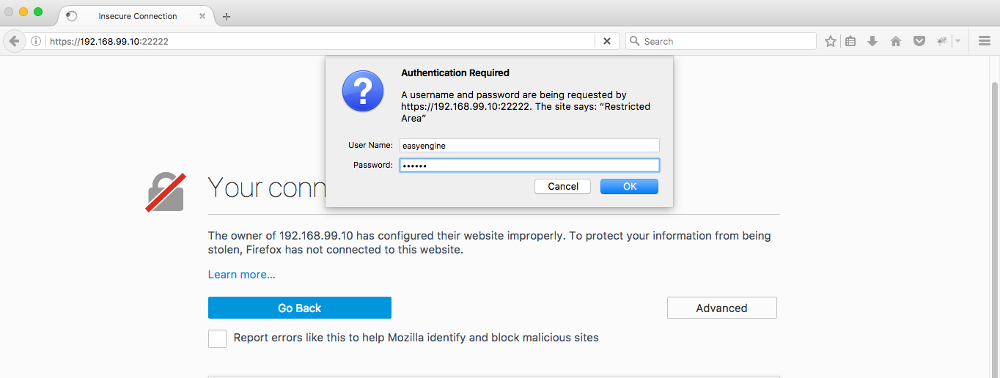
El contenido serán unos enlaces a directorios db, fpm, php, damos click en db y luego en pma y ya estaremos en phpmyadmin, ahora vamos a utilizar el usuario y contraseña que recuperamos del archivo ee-config.php del paso 7
el resultado es esta pantalla
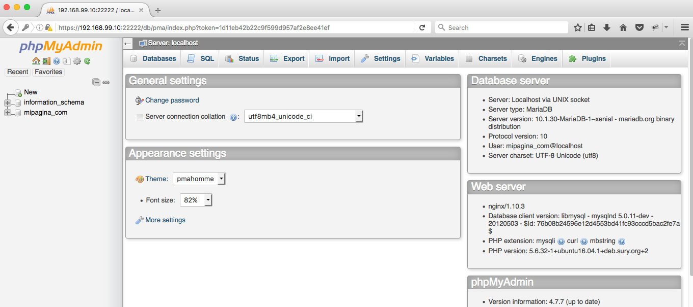
Ya tenemos listo nuestro sitio web y tambien a la base de datos MySQL, si deseas agregar otro sitio, en resumen éstos serian los pasos:
- Desde la maquina virtual teclear
$ sudo ee site create miotrapagina.com --mysql --php7 - Desde nuestra maquina principal, creas una carpeta dentro de public_html para alojar tu codigo fuente
- Desde nuestra maquina principal, agregamos en el archivo
hostla linea192.168.99.10 miotrapagina.com - Desde la maquina virtual, editamos el archivo de configuracion de Nginx
$ sudo vim /etc/nginx/sites-enabled/miotrapagina.com, cambiamos la ruta y reinciamos servicio$ sudo nginx -ty si no hay error$ sudo systemctl restart nginx - Explorar el contenido del archivo
ee-config.phppara obtener la base de datos, usuario y contraseña para este sitio.
Puedes tener en el mismo ambiente de desarrollo todos los sitios que desees con la misma direccion IP, solo hay que elegir un dominio ficticio diferente, incluso sitios de Wordpress.